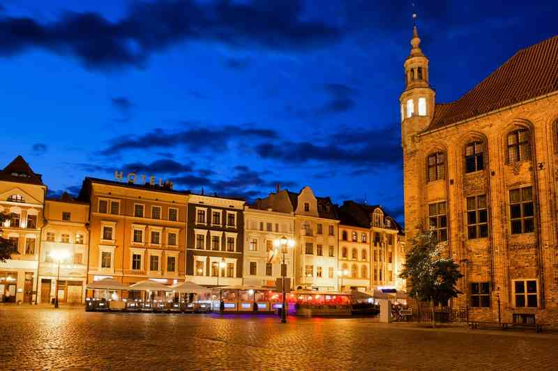
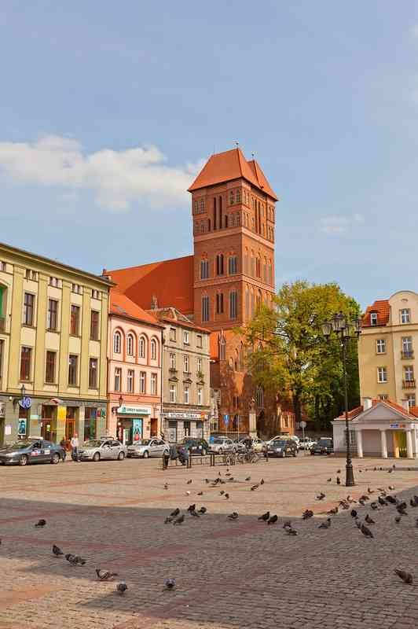

Toruń
Родина Николая Коперника, историческая часть города состоит в списке всемирного наследия ЮНЕСКО. Бывшая столица Торуньского воеводства (1975—1998 годы) и Поморского воеводства (1921—1939), Торунь с 1999 года стал одной из столиц Куявско-Поморского воеводства.
«Пряничная» столица Польши.
-
Старая ратуша
Старая ратуша Торуни является одним из величайших образцов светской средневековой архитектуры в Европе. Это восходит к середине 13-го века, но длительная работа была сделана в 1390-х годах под руководством великого мастера тевтонского, Конрад фон Валленроде. Внутри есть музей истории города, и вы можете сражаться по ступеням на вершину башни, самой старой части здания, за потрясающий вид на Старый город.
-

Рынек Старомейский (Староместская площадь)
Там, где все это началось, сказочная центральная площадь Торуни была отмечена между 1252 и 1259 годами. Во времена средневековья по западному фронту проводились турниры, а людей казнили и наказывали на колонне. Одним из них является Artus Court, когда-то являвшийся сердцем социальной и политической жизни для торговцев в тевтонском городе, теперь с фасадом в стиле неоренессанса конца 19-го века.
-
Торуньский собор
В качестве приоритета вы должны увидеть фрески на алтаре, датируемые 14 веком и показывающие Распятие и Страшный Суд. На тему Коперника, в часовне, посвященной астроному, - шрифт 13-го века, использованный для его крещения в 1473 году, а также бюст 18-го века и памятник гробнице. Вверху в башне вы можете увидеть Туба Дей (Божья труба), самый большой средневековый колокол Польши, весом почти 7,5 тонн и отлитый в 1500 году.
-
Руины Тевтонского замка
Когда вы помните, что он был разграблен в 1454 году во время восстания против Тевтонского ордена, неудивительно, что от старого Тевтонского замка к востоку от Старого города мало что осталось.. Место было в основном забыто до 1960-х годов, когда раскопки выявили подземные камеры, которые были открыты для посетителей. Вы можете зайти на кухню и узнать о рыцарской диете и посмотреть, что было бы в кладовой в обычный день.. Другие вещи, которые нужно обнаружить, - это общежитие, где информационные щиты информируют вас о распорядке дня, а также о восстановленных хранилищах и активной комнате для чеканки в замке замка.. В руинах старой часовни также есть множество реплик осадных машин.
-
Живой Музей Пряников
В старом городском амбаре начала XIX века идет реконструкция пекарни эпохи Возрождения. В этом режиме вы увидите и примете участие в традиционном способе приготовления пряников. Это повлечет за собой просеивание муки и мерных специй, а затем выпекание теста в старых формах из дерева.
-
Дом под звездой
Из всех памятников, стоящих перед Староместской площадью, этот дом в итальянском стиле барокко, возможно, является наиболее привлекательным. Здание намного старше своего фасада 17-го века, построенного в 1200-х годах. Позже в нем жили итальянский гуманист и писатель Филиппо Буонаккорси, воспитатель сыновей короля Казимира IV Ягеллона в конце 15 века.. Но эта подробная штукатурка с мотивом фруктов и цветов относится к 1697 году, а название здания происходит от золотой звезды на фронтоне на фасаде, который был размещен здесь во время этого редизайна.. Интерьеры с богато резными деревянными лестницами и расписными потолочными балками такие же, как в 18 веке.. Также в магазине сенсационная коллекция живописи, скульптуры и прикладного искусства из Китая, Индии, Японии, Вьетнама и Кореи.
-
Памятник Николаю Копернику
Памятник был поднят в 1853 году после более чем 14 лет сбора средств и подготовки. На постаменте надпись немецкого эрудита Александра фон Гумбольдта с надписью «Nicolaus Copernicus Thorunensis, terrae motor, solis caelique stator» («Николай Коперник из Торуна, движущийся по земле, стопор солнца и небес»).
-

Рынек Новомейский (Новая Городская площадь)
В старом городе, как Торунь, «новый» - это относительный термин, так как эта площадь была заложена в 1264 году возле восточной оконечности Старого города. Когда-то в центре отдельного города на Новой городской площади была своя ратуша, которая утратила свой статус, когда два города объединились в 15-м веке и были снесены в 1800-х годах. Учитывая его возраст, на Новой городской площади ощущается масштаб, 95 х 95 метров, со всех сторон окруженный красивыми фасадами таунхаусов.
-
Средневековые стены
Стены Торуня так же стары, как и город, начиная с середины 13-го века. Поскольку город рос в позднем средневековье, они также были расширены и усилены. Некоторые большие куски были сохранены, и до сих пор стоят девять ворот и башни. Самый полный участок простирается примерно на 100 метров вдоль Вистуальной набережной, начиная с западающей башни на западе, о которой мы поговорим позже. После короткой прогулки вы достигнете Брама Мостова (Мостовые ворота), впервые поднятого в 1432 году, с оживальным порталом под ним. Название происходит от деревянного моста, который когда-то пересек реку в этой точке. Примерно с того же периода является внушительная Брама Клашторна (Ворота монастыря), которая имеет фламандскую готическую архитектуру и высотой в пять этажей.
-
Пизанская башня Торуни
Построенное из красного кирпича в конце 13-го века, здание имеет наклон в 1,46 метра от реки, в результате чего оно нависает над улицей ниже.. Одна игривая история гласит, что башня раньше дружила с Вислой, поэтому река стала ближе к ней. Но когда река подошла ближе, она начала разрушать стены. И когда башня умоляла реку не подходить слишком близко, потому что она может упасть, река закричала: «Тогда падай!» Или «Торунь» на польском языке. Этот крик эхом разнесся по ландшафту и был услышан людьми, проезжающими мимо города, и вот как он оказался на картах.
-
Зернохранилища Торуни
Эти готические сооружения восходит к тому времени, когда город был членом Ганзейского союза с 13 по 15 века. Осталось 30 амбаров, по сравнению с почти 100, когда город был на пике своих возможностей, и они были в основном приспособлены как дома. Вы можете отличить их от многоквартирных домов Торуни по густо выстроенным полукруглым отверстиям в их стенах. За лучшими примерами отправляйтесь в Улицу Рабянскую, Улицу Мостову и Улицу Цясну.
-
Фонтан Космополис
Еще одно достойное почтение к Копернику - на западной окраине Старого города, рядом со зданием Гармоники университета. Этот фонтан, созданный местным художником Збигневом Микилевичем, был включен в 2008 году и вдохновлен оригинальной работой Коперника «О революциях небесных сфер». Стреляя через гранитную основу 113 самолетов, строят орбиты планет, Меркурия, Венеры, Земли, Марса, Юпитера и Сатурна. Они закреплены вокруг самой высокой центральной струи высотой пять метров, изображающей солнце. Летом фонтан устраивает четыре световых и звуковых шоу с 21:00 до 00:00.
-
Планетарий
Планетарий был открыт в 1994 году и расположен в переоборудованном газгольдере «Готическое возрождение», построенном в 1860 году. Здесь вы можете посмотреть пять англоязычных шоу по таким темам, как Солнечная система и крупнейшие известные объекты во вселенной. Современный проектор Планетария был изготовлен немецким оптическим брендом Zeiss и проецирует свои изображения на купол диаметром 15 мм, один из крупнейших в Польше. На первом этаже здания находится Орбитариум, целиком посвященный миссии Кассини, которая передала изображения Сатурна десять лет назад и высадила зонд Гюйгенс на одной из его лун, Титане.
-
Быдгоские Предместье
Когда-то в пригороде, а теперь в центре города, Быдгоские Пзедземецки появились на окраине городского парка, когда Торунь процветал в конце 19-го века.. Помимо Старого города, теперь это квартал города с наиболее значительными памятниками, все в форме изящных многоквартирных домов в стиле модерн, восстановленных после десятилетий безнадзорности во времена Польской Народной Республики. Хорошее место для начала - Улица Быдгоска, продолжающая движение вниз по Мицкевичу и Шопену. Прежде чем завершить цикл и вернуться в Старый город, вы можете побродить по городскому парку с зоопарком и ботаническим садом.
-

Wiślana Panorama Torunia
Вы также можете разглядеть остатки Тевтонского замка, старых амбаров, башни Старой ратуши и несколько фронтонов из домов бюргеров и патрициев. После заката сцена становится очень романтичной, когда стена и памятники внутри освещаются и отражаются в Висле.